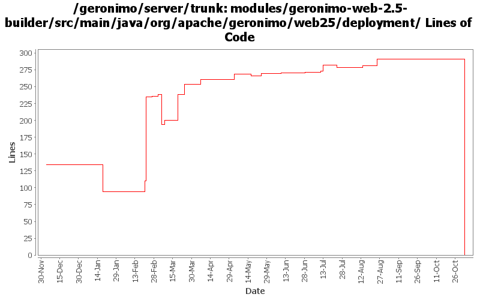

[root]/modules/geronimo-web-2.5-builder/src/main/java/org/apache/geronimo/web25/deployment

| Author | Changes | Lines of Code | Lines per Change |
|---|---|---|---|
| Totals | 30 (100.0%) | 494 (100.0%) | 16.4 |
| djencks | 19 (63.3%) | 464 (93.9%) | 24.4 |
| dwoods | 3 (10.0%) | 13 (2.6%) | 4.3 |
| vamsic007 | 1 (3.3%) | 6 (1.2%) | 6.0 |
| jgenender | 2 (6.7%) | 5 (1.0%) | 2.5 |
| rickmcguire | 1 (3.3%) | 3 (0.6%) | 3.0 |
| gawor | 1 (3.3%) | 3 (0.6%) | 3.0 |
| prasad | 1 (3.3%) | 0 (0.0%) | 0.0 |
| kevan | 2 (6.7%) | 0 (0.0%) | 0.0 |
GERONIMO-3565. Modules distributed amongst framework/modules and plugins
0 lines of code changed in 1 file:
GERONIMO-3421 Updated patch to handle changes made in trunk that were not in the 2.0 branch.
1 lines of code changed in 1 file:
GERONIMO-3421 ClassFinder classloader problems cause deployer to hang. Toby, thanks for the patch.
11 lines of code changed in 1 file:
GERONIMO-3254 Admin Console Wizard to auto generate geronimo-web.xml
and dependencies GERONIMO-3394, GERONIMO-3395, GERONIMO-3396, GERONIMO-3397, GERONIMO-3398
o First commit of "Create Plan" portlet code.
o Thanks to Shiva Kumar H R for this work.
6 lines of code changed in 1 file:
GERONIMO-3307 Clear up test case meaning a bit, better error message, and use the right DeploymentContext for finding the war manifest classpath
1 lines of code changed in 1 file:
GERONIMO-3307, rest of commit. Fix manifest classpath resolution some more
10 lines of code changed in 1 file:
GERONIMO-3307 fix a problem with identifying which module a persistence unit is supposed to be associated
2 lines of code changed in 1 file:
let's be a bit smarter about this. apparently double slashes can screw things up even for tomcat
3 lines of code changed in 1 file:
GERONIMO-3246 Cleanup exception handling so stack traces for first failures are not discarded.
3 lines of code changed in 1 file:
GERONIMO-2687. Don't construct default and run-as subjects, get them from a login module. Also creates a separate server-security-config for the security config stuff you probably want to change. Also fixes lots of security problems, including mdb run-as handling.
2 lines of code changed in 1 file:
GERONIMO-3188 Look for annotations in superclasses, and apply them when found
13 lines of code changed in 1 file:
GERONIMO-3132 GERONIMO-3165. Fix a bunch of stuff with locating persistence.xml and persistence unit jars. Hook up with openejb for extended persistence contexts
37 lines of code changed in 1 file:
GERONIMO-3151 DeploymentUtil.recursiveDelete(File,Collection) is returning a collection of File objects, whereas most builders are expecting Strings
1 lines of code changed in 1 file:
GERONIMO-3134 GERONIMO-3136 Fix app client refs including ejb refs. Get a lot closer to jpa working on the app client
2 lines of code changed in 1 file:
GERONIMO-3131 GERONIMO-3132 GERONIMO-3133 GERONIMO-3134 Defaults for persistence units. Supply locations of jars with persistent classes to the PersistenceUnitInfo. Match a ref with not persistence unit specified to a unique match. Allow wars to have jndi references pointing to the war module, not just the ear
10 lines of code changed in 1 file:
GERONIMO-3070 only generate web app dependencies onto stuff in the current ear, not all the parents
18 lines of code changed in 1 file:
GERONIMO-2965 GERONIMO-3008 GERONIMO-3010 Tomcat annotation processing with lots of other improvements. Uses LifecycleProvider interface proposed in GERONIMO-3010
16 lines of code changed in 1 file:
GERONIMO-2982 Prepend / to path url patterns in servlet mappings if missing. Also some much bigger changes to improve info in exception messages and some genericization
45 lines of code changed in 1 file:
GERONIMO-2943 add ModuleBuilderExtensions to web module builders
7 lines of code changed in 1 file:
GERONIMO-2934 Create ClassFinder in module builders. This almost certainly has bugs
20 lines of code changed in 1 file:
GERONIMO-2921 Forgot this file
4 lines of code changed in 1 file:
GERONIMO-2893 Progress towards better annotation support
3 lines of code changed in 1 file:
GERONIMO-2908 - Deploy JAX-WS services without webservices.xml
1 lines of code changed in 1 file:
GERONIMO-2887 Start hooking up injection for jetty
4 lines of code changed in 1 file:
GERONIMO-2837 3rd try, hopefully the charm. Move jsp-detecting code to where we look at servlet vs jsp
17 lines of code changed in 1 file:
GERONIMO-2837 missed part of the annotations support in last commit
146 lines of code changed in 1 file:
GERONIMO-2816 related. Move the NamingBuilder.buildEnvironment late enough so a classloader is available for help with annotation procesing. Intermediate patch to coordinate work.
17 lines of code changed in 1 file:
GERONIMO-2749 make AbstractWebModuleBuilder deal with http extension methods for jacc 1.1
94 lines of code changed in 1 file:
GERONIMO-2537 Fix notices and src headers in recent jee5 updates. Update Web Console notice.txt w/ ibm donation information, add copyright to assembly notice files, and remove ASF v 1.1 license from source borrowed from xerces project
0 lines of code changed in 2 files: